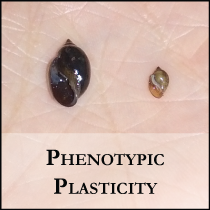
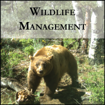
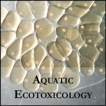

Amphibian Ecology
  
Although my population ecology research has included a variety of species, I am most interested in the effects of disease and parasitism on amphibian populations and how anthropogenic impacts affect amphibian–parasite interactions.


Amphibian populations are declining globally and, each year, they have less habitat than the year before. Not only have amphibians lost upland habitat, but estimates suggest the United States has lost over 50% of its wetlands to agriculture. The remaining ponds are often contaminated with agrochemicals, trampled by cattle, or both. Studies assessing the wetland and landscape conditions that promote amphibian populations are essential for their conservation.


I’m also interested in the plasticity and inheritance of amphibian pigment polymorphisms. There are three distinct phenotypes that are known to be genetically determined in Leopard Frogs: color, mottled pigmentation (Kandiyohi), and absence of spots (Burnsi). There are three loci with two alleles at each locus that influence these polymorphisms. Green (G) is dominant to brown (g), mottled pigmentation (K) is dominant to non-mottled (k), and spotless (B) is dominant to spots (b). Studies on development suggest frogs with the K phenotype develop quickly and metamorphose sooner. This is a major adaptation for frogs in temporary ponds. However, the frequency of K is low, which suggests there are tradeoffs.